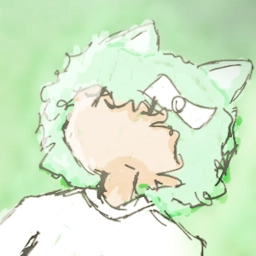

About me!
Hello! My name is Sylvia, and I'm a 20 year old girl from Hungary! I sometimes draw digital art and make GFX, but I often do software development in my spare time.
My favorite games are usually rhythm games, mainly StepMania. I also like Tetris, Puyo Puyo, Minecraft, Geometry Dash, as well as Touhou Project. I also sometimes play a variety of other games too, including some difficult ones here and there that I personally enjoy playing. (i.e. Celeste)
I have a huge interest in tech in nearly all aspects; mostly on the software side, and a little bit on the hardware side. I also aspire to be a video game developer, especially for a planned future project lead by me and some of my friends.
Online Statuses
- Online
- I'm available!
- Away
- Away from my computer, or in a place where I'm nowhere near my computer.
- Busy / Do not disturb
- Busy with stuff. I'm most likely drawing, studying, working on something, etc.
It could also mean that I'm REALLY not in a good mood. (although even in this case I rarely ever use this status) - Offline / Invisible
- Unavailable, or I don't want to talk to anyone at the moment; but could also mean that I'm asleep or in an area with no internet connection available.
"FAQ"
Do you take commissions?
Unfortunately, I don't really do at the moment, as I have no proper viable payment method set up for that yet.
While I do have a Ko-Fi page for that, and a PayPal account to accept income, they're not yet ready to be used for them.
What programming language(s) do you want to learn?
I plan to start learning C++ in the future, and maybe later I could try doing other web development stuff.
Right now I'm learning C#, but I do know a bit of Vue.js and I recently started learning and using Godot Engine.
I have yet to put more stuff here, but for now you can find my socials (which can include other information about me) on the Socials page!